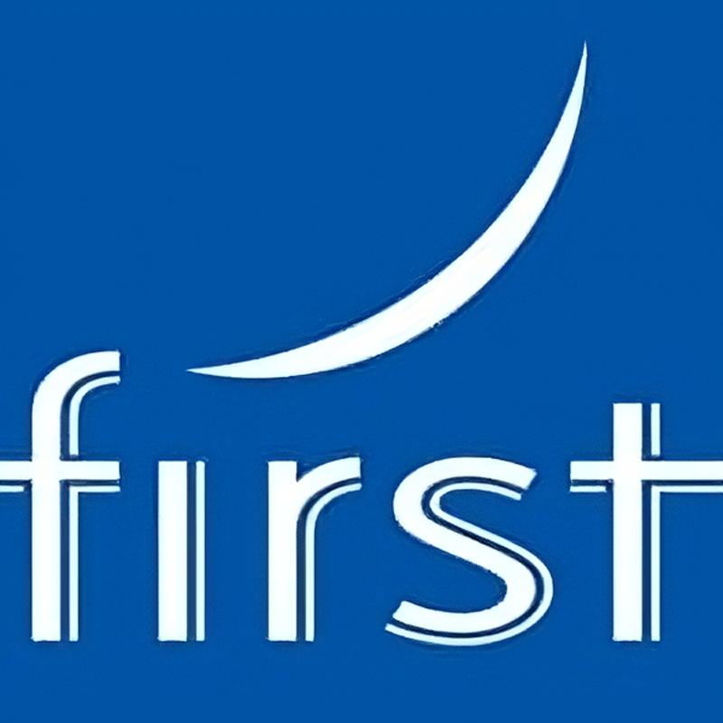

Desain Grafika dan Komunikasi Visual

Deskripsi
Desain Komunikasi Visual adalah proses menciptakan pesan atau informasi dengan menggunakan
elemen-elemen visual seperti gambar, warna, tipografi, dan bentuk untuk menyampaikan pesan secara
efektif kepada audiens. Tujuan dari desain komunikasi visual adalah agar pesan tersebut dapat dengan
mudah dipahami, menarik perhatian, dan efektif dalam mencapai tujuan komunikasi yang diinginkan.
Dalam Desain Komunikasi Visual, desainer berusaha menyampaikan pesan dengan cara yang kreatif, menarik,
dan sesuai dengan target audiensnya. Beberapa bidang yang menggunakan Desain Komunikasi Visual adalah
periklanan, media sosial, desain grafis, branding, penerbitan, dan banyak lagi.
Proses desain komunikasi visual melibatkan beberapa langkah, termasuk pemahaman tentang pesan yang akan
disampaikan, penentuan target audiens, identifikasi elemen visual yang sesuai, dan kemudian pengaturan
elemen-elemen tersebut dalam sebuah komposisi yang menyampaikan pesan secara jelas dan efektif.
Contoh-contoh Desain Komunikasi Visual mencakup poster, iklan cetak, brosur, logo, desain situs web,
infografis, dan banyak lagi. Penerapan desain komunikasi visual yang baik dapat membantu meningkatkan
daya tarik dan efektivitas pesan serta menciptakan kesan yang kuat pada audiens.
Kompetensi Dasar
- Profil Technopreneur, Peluang Usahadan Pekerjaan/Profesi Bidang Desain Komunikasi Visual
- Proses Bisnis Berbagai Industri di Bidang Desain Komunikasi Visual
- Perkembangan Teknologi di Industri dan Dunia Kerja Serta Isu-Isu Global pada
Bidang Desain Komunikasi Visual - Teknik Dasar Proses Produksi pada Industri Desain Komunikasi Visual
- Sketsa dan Ilustrasi
- Komposisi Typography
- Fotografi Dasar
- Komputer Grafis
- Prinsip Dasar Desain dan Komunikasi
- Perangkat Lunak Desain
- Menerapkan Design Brief
- Karya Desain
- Proses Produksi Desain
Tujuan Pembelajaran
Secara umum tujuan Unit produksi untuk meningkatkan mutu pendidikan dan latihan melalui penyediaan kesempatan pelatihan berproduksi secara profesional bagi peserta didik, serta mendukung pembiayaan operasional pendidikan dan peningkatan kesejahteraan.
- Untuk meningkatkan mutu tamatan dalam berbagai segi terutama dalam hal pengetahuan dan ketrampilan;
- Untuk wahana pelatihan berbasis produksi dan menumbuhkembangkan jiwa kewirausahaan bagi siswa;
- Untuk membantu pendanaan pemeliharaan, penambahan fasilitas dan biaya-biaya operasional pendidikan lainnya;
- Untuk mengembangkan sikap mandiri dan percaya diri dalam pelaksanaan kegiatan praktik siswa maupun dalam mendapatkan
kesempatan kerja; - Untuk melatih keberanian mengambil resiko dengan perhitungan yang matang;
- Untuk mendukung pelaksanaan dan pencapaian pendidikan Sistem Ganda (PSG) dan kurikulum;
- Untuk meningkatkan kreativitas, inovasi dan sikap profesional produktif pada siswa, guru dan manajemen sekolah;
- Untuk menjalin kerja sama yang lebih baik dengan dunia usaha dan industri serta masyarakat lain atas terbukanya
fasilitas untuk umum dan hasil-hasil produksinya; - Untuk meningkatkan intensitas dan frekuensi kegiatan intra, ko, dan ekstra kurikuler siswa; dan
- Untuk membangun kemampuan sekolah dalam menjalin kerja sama sinergis dengan pihak luar dan lingkungan serta masyarakat
luas. (Dikmenjur, 2007).
Tenaga Pengajar Produktif
- Muhammad Usep Saepudin, S.Ds
- Wida Kurnia, S.Ds
- Giyan Ramdhani, S.Pd.
- Yayang WIlly Rukmana, S.Ds.
- Yusuf Ramdhani, S.Pd
Institusi Pasangan
 |
 |
 |